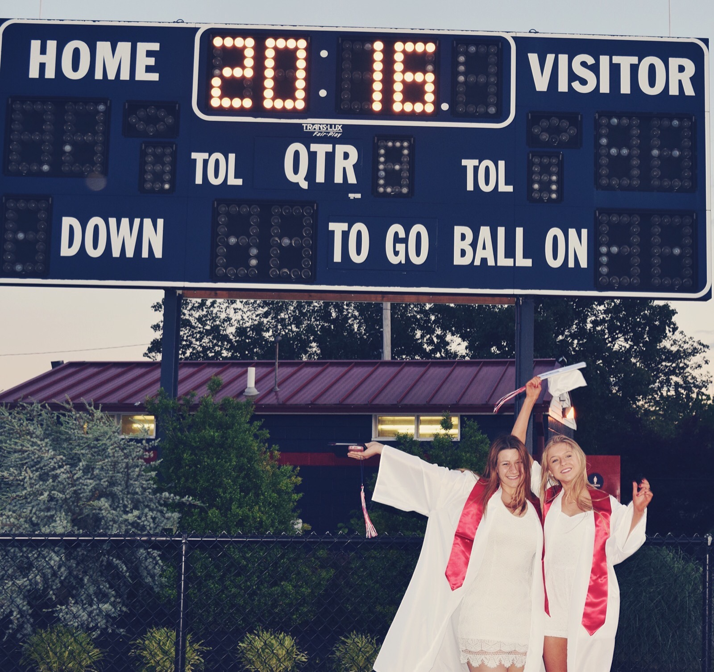
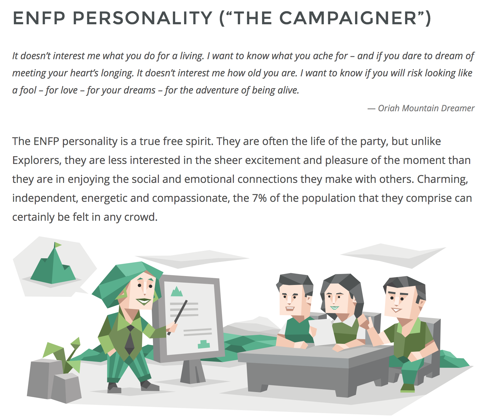
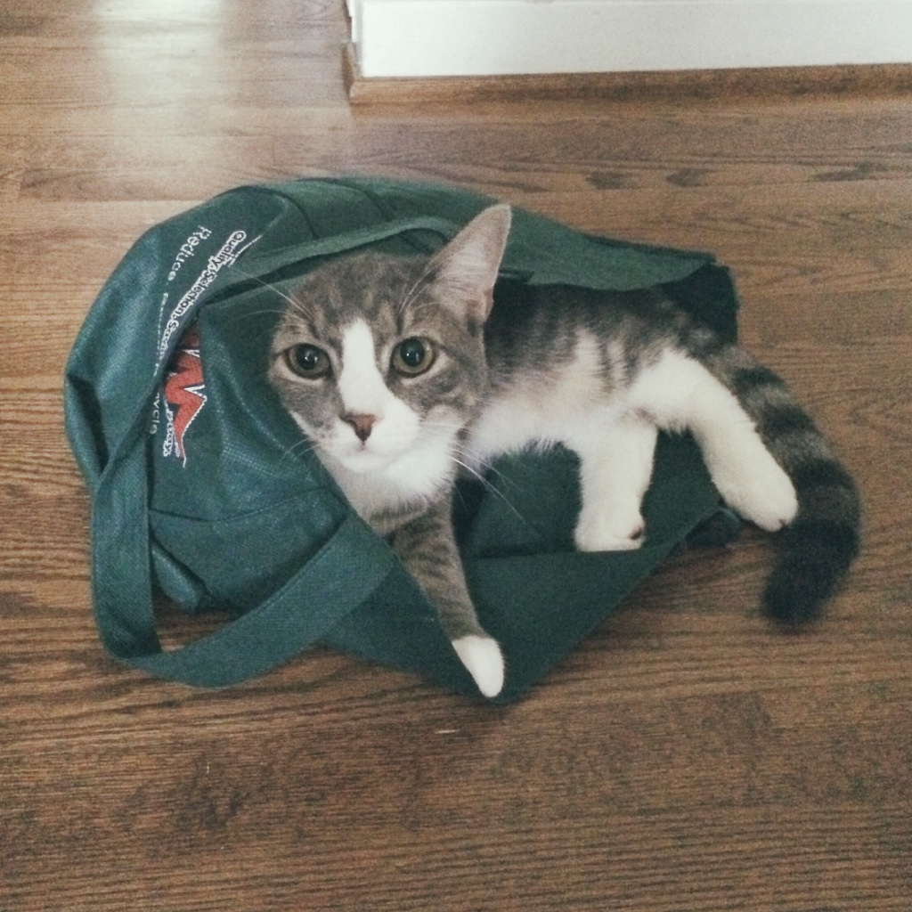
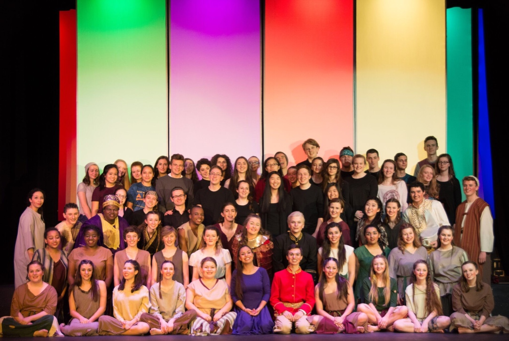

5 Things About Me
NUMBER ONE Before coming to Parsons, I attended Penn State University for my freshman year. I was studying as an Advertising
major with a Graphic Design minor. The summer of 2017 was when I decided to take a Graphic Design Intensive program
at Parsons. I ended up falling in love with the campus and teaching style that I dropped out of Penn State and applied
to The New School.
NUMBER TWO The place that I call home is Lafayette Hill, Pennsylvania. I went to Plymouth Whitemarsh High School where I
met some of my closest friends and first got acquanited with graphic design, photography, Adobe suite, etc.

NUMBER THREE My birthday is May 16th, so I am a Taurus and I definitely have the main alleged traits that come with that
zodiac sign. Though I find it super cool/interesting, I'm not a complete believer in the accuracy of horoscopes and
star signs. However, I do believe that the Myer's Briggs test was completely accurate and valid. I tested as an ENFP,
the campaigner, and that site could not have summed me up better.

NUMBER FOUR Back home my family has a cat named Mush. He's a fat grey cat with a kitten face and little white mitten
paws. My family is literally obsessed with him - especially my mom and sister. They talk in super high pitched voices
to him and act like he's a human infant. We have taught mush to play kitty baseball, a game where he bats at a piece
of crumpled paper and kitty ice hockey, a game in which he kicks pieces of ice from the fridge around the hardwood
floor.

NUMBER FIVE I love broadway musicals! My favorite soundtracks to sing to are Rent and Hairspray. I was in two of the musicals
at my high school (Tarzan & Aida) and I was obsessed with performing the songs and dances with some of my closest friends.
